MountainCar Challenge
In this environment, we have a car positioned in a valley between two mountains and we have a yellow flag in the top right.
The goal here is to drive the car up the mountain until it reaches the flag in the least amount of time possible. The trivial solution would be to accelerate the car only in the right direction towards the flag. However, there is one caveat: the car's engine is not powerful enough to go straight up the hill against gravity. Thus, it needs to learn to rock back and forth to get enough momentum to reach the goal, as seen in Figure 1:
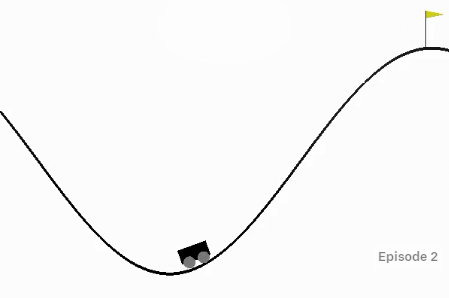
Figure 1- MountainCar Environment
The open-source code for this environment can be found here.
How to solve this problem?
This is an optimal control problem, that is, we are interested in finding an optimal policy to control the vehicle's engine in order to optimize an objective function. In this case, the objective function is related to the total time for the vehicle to reach the flag.
If we knew the dynamics of the system, this problem could be solved using exact solutions well-known in the literature, such as Dynamic Programming algorithms like the Linear Quadratic Regulator. However, we assume that we don't have the equations that rule the changes in the system, which is a reasonable assumption. For instance, in the real-world this system is affected by friction between the car and the environment. Although we may have prior knowledge of the coefficients of friction in some cases, in others we must find it empirically.
From our assumption that we don't know the dynamics of the system, we must learn the optimal control from experience. In order to do that, we can rely on Reinforcement Learning methods, which are described in the following sections.
Defining the elements of the RL system
A Reinforcement Learning system contains several elements that need to be defined and are related to each other as shown in Figure 2:
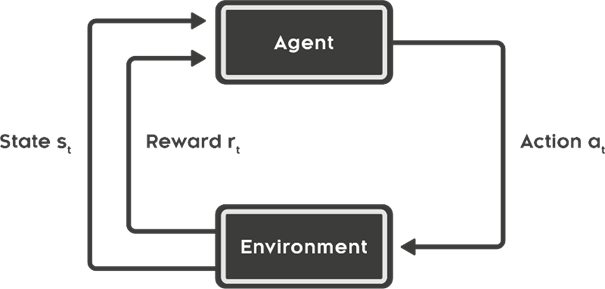
Figure 2 - Reinforcement Learning Elements [1]
'
1. Agent
The agent of the system is the decision-maker. In this case, the driver of the vehicle is the agent.
2. Environment
As mentioned above, the environment is comprised by the mountains and the flag, with which the vehicle interacts.
3. Actions
The set of possible actions that the driver can make is discrete:
- PUSH LEFT: 0
- NO PUSH: 1
- PUSH RIGHT: 2
4. State
The state is a 2-D vector containing the current position of the vehicle (from -1.2 to 0.5) and the current velocity (from -0.07 to 0.07) in the form s = (position, velocity)
5. Reward
Finally, the reward is -1 for every time step.
With this reward function, we are incentivizing the agent to reach the terminal state as fast as possible, and that is indeed what we want.
State Aggregation: from continuous to discrete
As mentioned in the previous section, the state can be characterized by a vector of the form s = (position, velocity), where the position and velocity of the vehicle are two bounded scalars belonging to ℝ. Thus, they are continuous values.
However, in order to apply tabular methods of reinforcement learning, we need to work with a discrete state space. That's when State Aggregation comes to place.
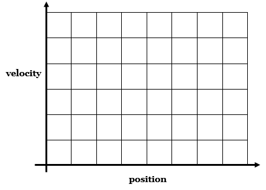
Figure 3 - Gridline division of state space
This technique consists of dividing the continuous state space into subgroups, where each subgroup contains a high-dimensional interval of the state space. All the states in each subgroup will share the same properties, such as reward distribution and state value. Actually, State Aggregation can be considered a special case of linear function approximation, where the subgroups are features of the state space. This, however, is out of the scope of this project.
One way to divide the state space is with the gridline method, by setting parallel lines in each dimension with constant intervals, as shown in Figure 3:
Using this method, I'll subdivide the position state variable into 17 intervals of length 0.1 and the velocity state variable into 14 intervals of length 0.01.
Therefore, I'll convert a continuous 2-dimensional state space into a discrete space of 17*14 = 238 states.
Tabular Q-learning
The tabular Q-learning algorithm is based on updates of the state-action value function Q(s,a) for each state and action in the discrete space. Usually, we store those Q-values in a table, with each line corresponding to a state and each column to an action. Hence the name 'tabular' Q-learning.
The update rule for the Q-values follows the 'Bellman-equivalent' equation:
Q(St, At) = Q(St, At) + α[Rt+1 + ϒmaxaQ(St+1, a) - Q(St, At),
where t corresponds to the time step, S is the state, A is the action, α is the step size and ϒ is the discount factor.
The complete algorithm can be seen in Figure 4 below:
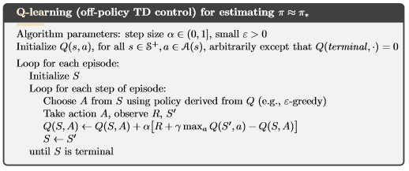
Figure 4- Tabular Q-learning algorithm [2]
For this problem, I used the ϵ-greedy policy as the behavior policy and I trained the agent with a grid of hyper parameters as follows:
α in {0.5, 0.1, 0.01}
ϵ in {0.5, 0.01}, where ϵ is the exploration factor for the ϵ-greedy policy
ϒ = 1
As the Mountain Car control is an episodic task (an episode ends when the car reaches the flag), we don't need to set a discount factor less than 1.
Each combination of hyper parameters was then applied to an agent for 10 runs of 500 episodes each. The number of steps it took the agent to finish the episode was averaged over the 10 runs for each episode and then averaged again over 50-episode ranges. The results can be seen in Figure 5:
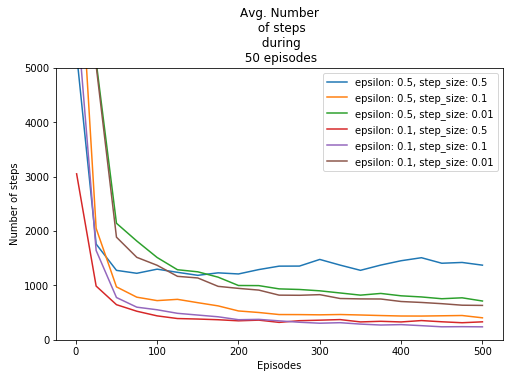
Figure 5 - Learning behavior for different hyper parameter sets
We can see from the plot above that large step sizes converge faster, but with worse performance. Ideally, we would want to train agents over a large number of episodes with a small step size. However, the incremental performance we get is not worth the increase in time. Thus, a step size of 0.1 seems reasonable.
Narrowing our agents to [ϵ = 0.5, α = 0.1] and [ϵ = 0.1, α = 0.1], we can train them again this time with 1 run of 2,000 episodes instead of 500. Figure 6 shows the results:
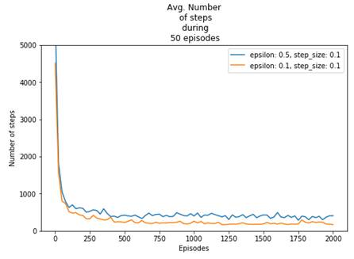
Figure 6 - Learning behavior for chosen hyper parameters
We can observe from Figure 5 and 6 that larger epsilon values converge with worse performance than small values. This is expected, as a higher epsilon implies that the agent will spend more time exploring actions that are not optimal, which impacts negatively the number of steps to finish an episode. Thus, we can't use this plot to compare the performance of different values of epsilon on the final policy, as the final policy will be greedy and not ϵ-greedy.
Instead, we can apply the final policy learned by the agent over random initial states and plot the distribution of number of steps taken to finish an episode, as seen in Figure 7 and Figure 8:
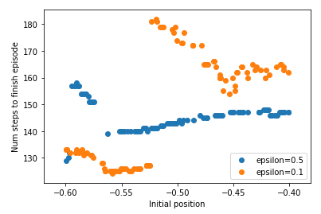
Figure 7 - Number of steps to finish episode vs initial position
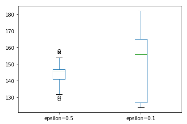
Figure 8 - Boxplot of number of steps to finish episode for each epsilon
We can see that, although the exploration parameter ϵ is very different, both agents performed similarly. This is due to the 'optimistic initialization' of the Q function by the agent. An optimistic initialization, as the name suggests, sets optimistic starting values for Q(s,a). Thus, when the algorithm explores states and actions and updates the corresponding Q(s,a), the Q-values will decrease. Then, the ϵ-greedy policy will prioritize unexplored states, even for small values of ϵ.
According to Figure 7, ϵ = 0.5 performed better when the vehicle started in the right part of the mountain and, overall, it had a better average number of steps. Then, it would make sense to conclude that ϵ = 0.5 is better than ϵ = 0.1. However, the final policy of the agents has a high variance. For example, if we train both agents again with a different random seed, we obtain a new plot (Figure 9):
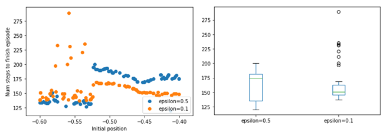
Figure 9 - Number of steps to finish episode for random initial states
This time, ϵ = 0.1 seems a better option. Thus, the variance is too high to reach any conclusion. One possible explanation is that the Q value function is not generalizing along states. This problem will be analyzed in this article afterwards.
If we choose ϵ = 0.1 and α = 0.1 and train the agent after 3,000 episodes, it was able to learn how to reach the flag in less than 200 steps, regardless of the initial position.
In the first episodes, the algorithm was exploring new states and actions and thus the vehicle moved erratically back and forth, as seen in Figure 10:
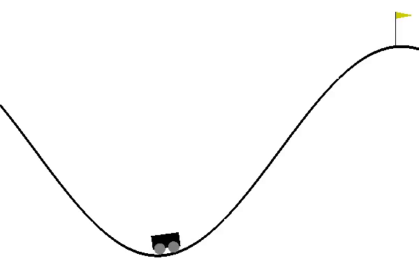
Figure 10 - Demo of control after 19 episodes of training
After around 200 episodes, the algorithm started converging to an optimal policy. A demo of the final control can be seen in Figure 11:
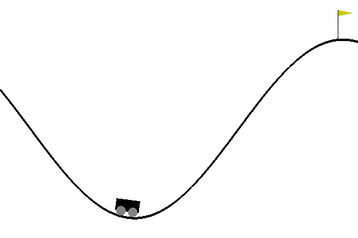
Figure 11 - Demo of control after 3000 episodes of training
Figure 12 shows an illustration in 2 dimensions of the final policy found by the agent:
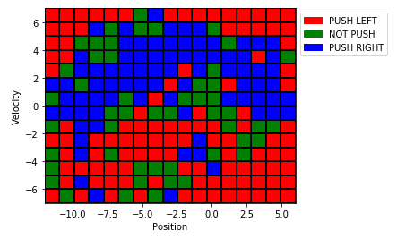
Figure 12 - Final policy representation
We can see that for negative velocities the most common action is is to push left and for positive velocities is to push right, which makes sense if we want to build momentum. However, there are some inconsistencies in the policy, such as the top right corner. If the velocity is positive and high and the vehicle is close to the flag, pushing left will only delay the end of the episode. Again, this may be due to a lack of generalization.
Indeed, if we look at the number of visits for each state-action pair, a lot of them were not visited by the agent, mainly the positions around the edge of the grid, as shown in Figure 13:

Figure 13 - State-action visits while training the agent
Finally, the value function for the final policy can be seen in Figure 14 below:
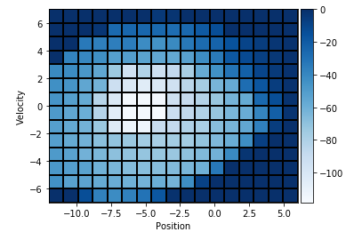
Figure 14 - Value function for the final policy
The minimum value can be found when the vehicle is in the bottom of the mountain with null velocity, which makes sense, as this is the state with the lowest energy. As the vehicle gets further from this state, the value increases in a spiral shape around it.
[1] https://images.app.goo.gl/CKnvseNTxRkppGki9
[2] Sutton, R. S., Barto, A. G. Reinforcement Learning: An Introduction. Cambridge, MA: The MIT ''Press, 2018, Second edition, p. 131